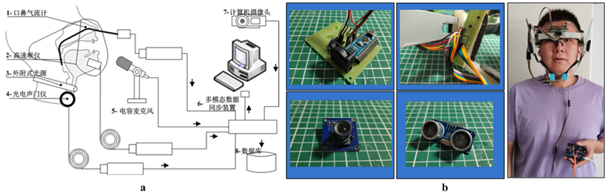
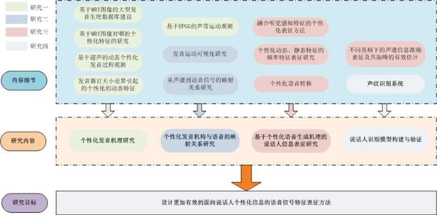
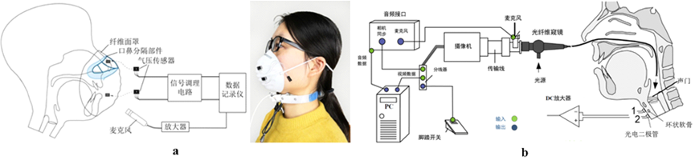
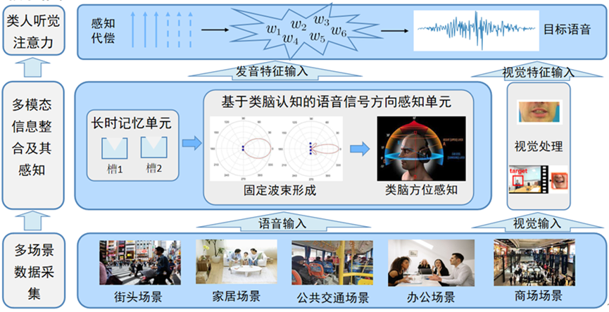
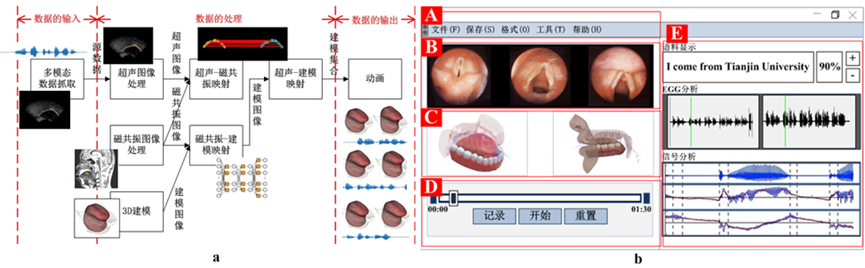
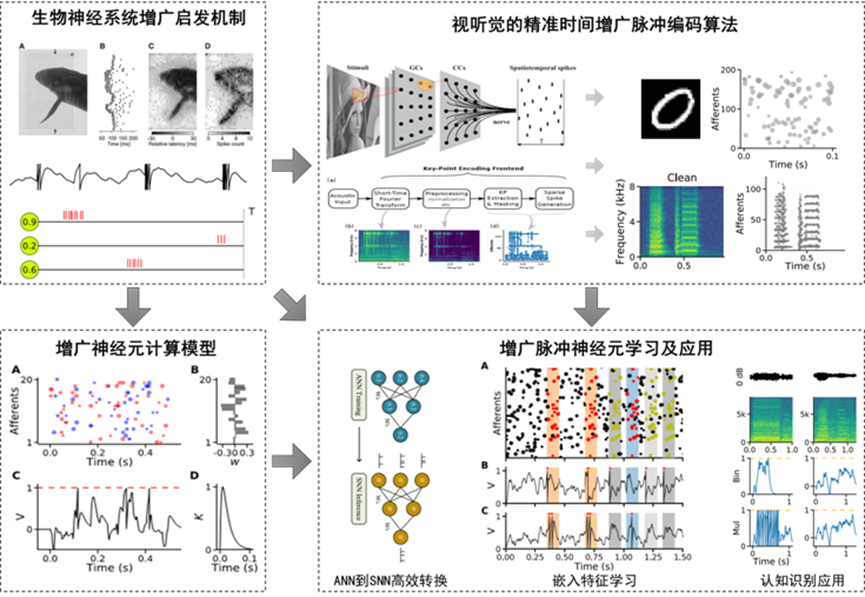

个人资料
全国优秀教育工作者
中央文明办“中国好人”
青海省杰出教育工作者
教育部网络空间安全类教指委委员
中国语言学会语音分会委员
中国计算机学会语音听觉与对话专委会副主任委员
天津市虚拟仿真学会理事长
国家民委人工智能应用技术重点实验室主任
青海高端创新千人计划领军人才
个人简介
魏建国，教授，博导。2018年起担任教育部网络空间安全教指委委员。吉林大学学士学位，天津大学硕士学位，日本北陆先端科学技术大学院大学博士学位，法国国家科学研究中心CNRS/Telecom及JAIST等机构博士后研究员。 近年来致力于“AI+语音”的交叉研究工作，专注于研究人的发音与听觉感知机理及其在语音个性化分析、网络安全、身份认证、障碍语音、言语习得、藏语语音多模态分析等方面的研究。在国际国内重要刊物和学术会议上发表论文150余篇。曾担任全国人机语音通讯大会（NCMMSC2015） 程序委员会主席，国际汉语口语信息处理大会（ISCSLP 2016） 组委会主席，国际语音生成研讨会（ISSP2017）组委会主席，全国和谐人机环境（HMME2018）大会主席，全国人机语音通讯大会（NCMMSC2019）大会主席。2023年牵头及参与获得国家级教学成果奖二等奖3项，天津市教学成果特等奖三项，青海省教学成果二等奖1项。获中国技术市场协会“金桥奖”--突出项目贡献奖。作为项目负责人承担了国家重点基础研发课题，国家自然科学基金面上项目，微软科研基金项目，973子课题。作为项目参与人承担国家自然科学基金重点项目、国家科技支撑等项目。在国际国内重要刊物和学术会议上发表论文150余篇。
曾组织语音学相关会议：
NCSP2011大会秘书
第十三届全国人机语音通讯大会NCMMSC2015程序委员会主席
第十届国际汉语口语信息处理大会 ISCSLP2016组委会主席
第十一届国际语音生成研讨会ISSP2017组委会主席
第十四届全国和谐人机环境联合学术会议HHME2018大会主席
第十五届全国人机语音通讯大会NCMMSC2019大会主席
研究概况
团队在言语科学及人工智能相关领域主要开展工作包括：1）人机智能交互 2）医学图像处理 3）语音机器学习 4）发音观测系统 5）智能感知 6）视听多媒体认知计算 7）类脑智能计算等与语音识别、信号处理和医疗健康等相关领域的研究，以期为语音学相关领域在学术和应用等方面的发展做出一定的贡献和推动。
科研设备
团队目前拥有的硬件配置包括：静音室（1间）、配套实践室（1间）、机器人（2台）、三维打印机（3台）、超声仪（6台）、EMA、PEG、EPGG、电声门仪、光声门仪、根据学生人数配备的专用笔记本（或台式电脑）、工作站（4台）等硬件设备。软件配置包括：实验室传承的研究课题的处理系统 和自身研制和改装的数据采集设备。
团队研究内容
1. 人机智能交互

图1 人机交互设备. a: 人机智能交互整体架构. b: 交互式传感器（组件传感器和装配）
2. 发音相关医学图像处理

图2 医学图像处理. a: 舌运动超声成像轮廓提取. b: 舌运动磁共振成像轮廓提取.
医学图像处理是一个快速发展的领域，其中舌运动的图像分析是研究的热点之一。舌运动超声成像轮廓提取和舌运动磁共振成像轮廓提取是该领域的核心技术。通过精确提取舌头的轮廓，我们可以深入研究舌头的运动规律，为言语病理学、语音识别等领域提供重要的数据支持。超声成像具有实时性强、无辐射等优点，适用于动态舌运动的研究；而磁共振成像则能提供高分辨率的图像，有助于对舌头内部结构的精细分析。两种成像方式的结合，将为我们全面了解舌运动提供更丰富的影像学信息。
3. 个性化语音机理研究

图3 应用于个性化机理的机器学习.
个性化语音机理研究是一个旨在深入理解人类语音个性化特征的跨学科研究领域。它结合了语音学、声学、语言学、计算机科学等多个学科，旨在揭示不同个体在发音方式、声学特征、语言习惯等方面的差异，并建立相应的数学模型和计算方法。
4. 新型发音运动观测系统

图4-1 发音观测系统的数据采集设备. a: 口鼻气流计. b: 声带观测系统.
发音观测系统是语音学研究和语音病理学诊断的重要工具，它通过采集发音过程中的各种生理和声学信号，帮助我们深入了解发音机制，诊断发音障碍，并为语音合成、语音识别等应用提供基础数据。
口鼻气流计是一种用于测量口鼻气流速率和气量的仪器。它通过放置在口鼻处的传感器，实时监测说话者在发音过程中呼出的气流。
声带观测系统用于直接观察声带的振动，从而了解声带的运动模式、振动幅度和闭合程度等信息。

图4-2 基于超声成像的多模态数据分析系统设备. a: 系统架构. b: 数据采集头盔. c: 可更换数据采集组件. d: 一体式采集设备. e: 可穿戴设备. f: 采集相关传感器.
5. 智能感知

图5 人脑听觉系统启发的多模态听觉前端计算模型.
人脑的听觉系统是一个极其复杂的系统，它能够从嘈杂的环境中提取出有用的声音信息，并进行高效的处理和理解。受到人脑听觉系统的启发，研究者们提出并发展了多模态听觉前端计算模型，旨在模拟人脑的听觉处理过程，提升机器对音频信息的感知和理解能力。
6. 视听多媒体认知计算

图6 视听多媒体认知计算. a: 技术框架. b: 表现系统.
7. 类脑智能计算

图7 仿脑架构神经网络
科研项目
• 国家自然科学基金联合基金项目：面向远场并发声学事件的深度实时分离研究，主持
• 国家自然科学基金面上项目：基于自适应频率尺度变换的骨导鼾声识别关键技术研究，主持
• 国家自然科学基金面上项目：基于观测图像的发音器官运动合成研究，主持
• 国家重点研发计划课题：刑事执行监督多源异构信息自动提取、分析匹配和信息交换关键技术与装备，主持
• 973子课题：面向互联网规模的群体用户语音交互建模与验证研究，主持
• 国家自然科学基金重点项目：语音产生过程的神经生理建模与控制，参与
• 国家科技支撑子课题：数字家庭服务仿真与验证系统研究，参与
学术成果
学术论文
Zhang R, Wei J, Lu X, et al. Unsupervised Adaptive Speaker Recognition by Coupling-Regularized Optimal Transport. IEEE/ACM Transactions on Audio, Speech, and Language Processing. 2024.
Zhang R, Wei J, Lu X, et al. Self-Supervised Domain Exploration with an Optimal Transport Regularization for Open Set Cross-Domain Speech Emotion Recognition. Paper presented at: ICASSP 2024-2024 IEEE International Conference on Acoustics, Speech and Signal Processing (ICASSP)2024.
Zhang H, Lu W, Wei J, Huang X, Yang X, Lu X. Efficient Singular Spectrum Mode Ensemble for Extracting Wide-Band Components in Overlapping Spectral Environments. IEEE Transactions on Signal Processing. 2024. 2.
Yang X, Ke W, Wei J. Plug-and-play learnable EMD module for time-domain speech separation. Applied Acoustics. 2024;226:110210.
Yang W, Wei J, Lu W, Li L, Lu X. Robust Channel Learning for Large-Scale Radio Speaker Verification. arXiv preprint arXiv:240610956. 2024.
Xie Z, Wei J, Lu W, Li Z, Wang C, Zhang G. EEG-Based Fast Auditory Attention Detection in Real-Life Scenarios Using Time-Frequency Attention Mechanism. Paper presented at: ICASSP 2024-2024 IEEE International Conference on Acoustics, Speech and Signal Processing (ICASSP)2024.
Wei J, Bai G, Lu W, Dang J. Decoding the dancing of the tongue: A model-based learning approach to phonetic targets in coarticulation. The Journal of the Acoustical Society of America. 2024;156(4):2485-2496.
Wang X, Lu W, Li S, Zheng K, Xu J, Wei J. Semisupervised Medical Image Segmentation through Prototype‐Based Mutual Consistency Learning. International Journal of Intelligent Systems. 2024;2024(1):9928155.
Sun Z, Hou Q, Tijsseling AS, Lian J, Wei J. Smoothed particle hydrodynamics with diffusive flux for advection–diffusion equation with discontinuities. Computers & Mathematics with Applications. 2024;160:70-85.
Li Y, Wei J, Fang Q, Lu X. Evaluation of an Improved Ultrasonic Imaging Helmet for Observing Articulatory Data. Paper presented at: ICASSP 2024-2024 IEEE International Conference on Acoustics, Speech and Signal Processing (ICASSP)2024.
Li G, Hou J, Liu Y, Wei J. MVIB-DVA: Learning minimum sufficient multi-feature speech emotion embeddings under dual-view aware. Expert Systems with Applications. 2024;246:123110.
Lei X, Lu W, Yong J, Wei J. RFF-PoseNet: A 6D Object Pose Estimation Network Based on Robust Feature Fusion in Complex Scenes. Electronics. 2024;13(17):3518.
Lei X, Lu W, Yong J, Wei J. A Robust AR-DSNet Tracking Registration Method in Complex Scenarios. Electronics. 2024;13(14):2807.
Ke W, Hou Q, Liu Y, Song X, Wei J. SARN: Script-Aware Recognition Network for scene multilingual text recognition. Expert Systems with Applications. 2024;250:123753.
Jia Y, Wei J, Wang X, et al. Graphologue: Bridging RDBMS and Graph Databases with Natural Language Interfaces. Paper presented at: International Conference on Database Systems for Advanced Applications2024.
Hou Q, Li Y, Singh VP, Sun Z, Wei J. Physics-informed neural network for solution of forward and inverse kinematic wave problems. Journal of Hydrology. 2024;633:130934.
Guo N, Wei J, Li Y, Lu W, Tao J. Zero-shot voice conversion based on feature disentanglement. Speech Communication. 2024;165:103143.
Guo M, Wei J, Zhang R, Zhao Y, Fang Q. Multi-modal co-learning for silent speech recognition based on ultrasound tongue images. Speech Communication. 2024;165:103140.
Deng T, Wei J, Yang J, et al. Breaking the Corpus Bottleneck for Multi-dialect Speech Recognition with Flexible Adapters. Paper presented at: International Conference on Artificial Neural Networks2024.
Chu R, Wei J, Lu W, Dong C, Chen Y. MFS-DBF: A trustworthy multichannel feature sieve and decision boundary formulation system for Obstructive Sleep Apnea detection. Computers in Biology and Medicine. 2024;179:108842.
Zhu Z, Chi Y, Zhang Z, Honda K, Wei J. Transvelar nasal coupling contributing to speaker characteristics in non-nasal vowels. Paper presented at: Proc. Interspeech2023.
Zhao Y, Wei J. Holistic Spatial Reasoning for Chinese Spatial Language Understanding. Applied Sciences. 2023;13(21):11712.
Zhao Y, Fei H, Cao Y, et al. Constructing holistic spatio-temporal scene graph for video semantic role labeling. Paper presented at: Proceedings of the 31st ACM International Conference on Multimedia2023.
Zhang R, Wei J, Lu X, et al. TMS: Temporal multi-scale in time-delay neural network for speaker verification. Applied Intelligence. 2023;53(22):26497-26517.
Zhang R, Wei J, Lu X, et al. Optimal transport with a diversified memory bank for cross-domain speaker verification. Paper presented at: ICASSP 2023-2023 IEEE International Conference on Acoustics, Speech and Signal Processing (ICASSP)2023.
Zhang R, Wei J, Lu X, et al. Self-supervised learning based domain regularization for mask-wearing speaker verification. Speech Communication. 2023;152:102953.
Zhang R, Wei J, Lu X, et al. SOT: Self-supervised Learning-Assisted Optimal Transport for Unsupervised Adaptive Speech Emotion Recognition. Paper presented at: Proc. INTERSPEECH2023.
Yu Z, Jin D, Wei J, et al. TeKo: Text-Rich Graph Neural Networks With External Knowledge. IEEE Transactions on Neural Networks and Learning Systems. 2023.
Yong J, Wei J, Wang Y, Dang J, Sun Y. Design and Fabrication of Mobile Visual Emergency Command Hall Based on Virtual Reality. Paper presented at: 2023 IEEE 3rd International Conference on Data Science and Computer Application (ICDSCA)2023.
Yong J, Wei J, Wang Y, Dang J, Lei X, Lu W. Heterogeneity in extended reality influences procedural knowledge gain and operation training. IEEE Transactions on Learning Technologies. 2023;16(6):1014-1033.
Yong J, Dang J, Wang Y, Wei J, Lu Y. Research and Exploration on Innovation and Entrepreneurship Practice Education System for Railway Transportation Specialists. Paper presented at: International Conference of Pioneering Computer Scientists, Engineers and Educators2023.
Yangzhuoma Q, Khysru K, Maji W, Wei J. Research on the classification method of knowledge question intention for Tibetan language curriculum. Paper presented at: Proceedings of the 5th ACM International Conference on Multimedia in Asia Workshops2023.
Yang Z, Khysru K, Zhu Y, Daijicuo L, Wei J. Automatic Labeling of Tibetan Prosodic Boundary Based on Speech Synthesis Tasks. Paper presented at: Proceedings of the 5th ACM International Conference on Multimedia in Asia Workshops2023.
Yang X, Zhang H, Lu Y, et al. LaSNet: An end-to-end network based on steering vector filter for sound source localization and separation. Applied Acoustics. 2023;212:109562.
Yang J, Wei J, Khysru K, et al. Effective Fine-tuning Method for Tibetan Low-resource Dialect Speech Recognition. Paper presented at: 2023 Asia Pacific Signal and Information Processing Association Annual Summit and Conference (APSIPA ASC)2023.
Liu J, Hou Q, Wei J, Sun Z. ESR-PINNs: Physics-informed neural networks with expansion-shrinkage resampling selection strategies. Chinese Physics B. 2023;32(7):070702.
Li Z, Zhang G, Wang L, Wei J, Dang J. Emotion recognition using spatial-temporal EEG features through convolutional graph attention network. Journal of Neural Engineering. 2023;20(1):016046.
Li G, Hou J, Liu Y, Wei J. MPAF-CNN: Multiperspective aware and fine-grained fusion strategy for speech emotion recognition. Applied Acoustics. 2023;214:109658.
Khysru K, Wei J. Bone whistle modeling method based on robust scan point tracking. Frontiers in Ecology and Evolution. 2023;11:1174739.
Ke W, Wei J, Xiong N, Hou Q. GSS: A group similarity system based on unsupervised outlier detection for big data computing. Information Sciences. 2023;620:1-15.
Ke W, Wei J, Hou Q, Feng H. Rethinking text rectification for scene text recognition. Expert Systems with Applications. 2023;219:119647.
Jin G, Zhai J, Wei J. CAA-Net: End-to-end two-branch feature attention network for single image dehazing. IEICE Transactions on Fundamentals of Electronics, Communications and Computer Sciences. 2023;106(1):1-10.
Jin D, Feng B, Guo S, Wang X, Wei J, Wang Z. Local-global defense against unsupervised adversarial attacks on graphs. Paper presented at: Proceedings of the AAAI Conference on Artificial Intelligence2023.
Jia Y, Wei J, Chen Z, Xu D, Han L, Liu Y. Hypermatch: Knowledge hypergraph question answering based on sequence matching. Paper presented at: International Conference on Database Systems for Advanced Applications2023.
Hu Y, Lu W, Wei J, Xu J, Ma M. A watermark detection scheme based on non-parametric model applied to mute machine voice. Multimedia Tools and Applications. 2023;82(29):44763-44782.
Hou Q, Du H, Sun Z, Wang J, Wang X, Wei J. PINN‐CDR: A Neural Network‐Based Simulation Tool for Convection‐Diffusion‐Reaction Systems. International Journal of Intelligent Systems. 2023;2023(1):2973249.
Ding J, Xu J, Wei J, Tang J, Guo F. A multi-scale multi-model deep neural network via ensemble strategy on high-throughput microscopy image for protein subcellular localization. Expert Systems with Applications. 2023;212:118744.
Cai Y, Wei J, Duan J, Hou Q. An Improved GPU Acceleration Framework for Smoothed Particle Hydrodynamics. Paper presented at: International Conference on Algorithms and Architectures for Parallel Processing2023.
Zheng K, Xu J, Wei J. Double noise mean teacher self-ensembling model for semi-supervised tumor segmentation. Paper presented at: ICASSP 2022-2022 IEEE International Conference on Acoustics, Speech and Signal Processing (ICASSP)2022.
Zhao Y, Wei J, Lin Z, Sun Y, Zhang M, Zhang M. Visual spatial description: Controlled spatial-oriented image-to-text generation. arXiv preprint arXiv:221011109. 2022.
Zhang R, Wei J, Lu W, et al. Cs-rep: Making speaker verification networks embracing re-parameterization. Paper presented at: ICASSP 2022-2022 IEEE International Conference on Acoustics, Speech and Signal Processing (ICASSP)2022.
Zhang K, Gong C, Lu W, Wang L, Wei J, Liu D. Joint and adversarial training with ASR for expressive speech synthesis. Paper presented at: ICASSP 2022-2022 IEEE International Conference on Acoustics, Speech and Signal Processing (ICASSP)2022.
Yu Q, Gao J, Wei J, Li J, Tan KC, Huang T. Improving multispike learning with plastic synaptic delays. IEEE Transactions on Neural Networks and Learning Systems. 2022;34(12):10254-10265.
Yang X, Wei J. DMANET: Deep Learning-Based Differential Microphone Arrays for Multi-Channel Speech Separation. Paper presented at: ICASSP 2022-2022 IEEE International Conference on Acoustics, Speech and Signal Processing (ICASSP)2022.
Xie M, Yu Y, Chen R, Li H, Wei J, Sun Q. Accountable outsourcing data storage atop blockchain. Computer Standards & Interfaces. 2022;82:103628.
Tadele F, Wei J, Honda K, Zhang R, Yang W. Effect of Language Mixture on Speaker Verification: An Investigation with Amharic, English, and Mandarin Chinese. Paper presented at: International Conference on Artificial Intelligence and Security2022.
Lu W, Zhao X, Guo N, et al. One-shot emotional voice conversion based on feature separation. Speech Communication. 2022;143:1-9.
Li N, Jin D, Wei J, Huang Y, Xu J. Functional brain abnormalities in major depressive disorder using a multiscale community detection approach. Neuroscience. 2022;501:1-10.
Li G, Chen J, Liu Y, Wei J. wUnet: A new network used for ultrasonic tongue contour extraction. Speech Communication. 2022;141:68-79.
Khysru K, Yangzom, Wei J. Tibetan Language Model Based on Language Characteristics. Paper presented at: International Conference on Artificial Intelligence and Security2022.
Khysru K, Wei J, Dang J. Research on Tibetan Speech Recognition Based on the Am-do Dialect. Computers, Materials & Continua. 2022;73(3).
Khysru K, Qie Y, Shi H, Sun Q, Wei J. Lhasa Dialect Recognition of Different Phonemes Based on TDNN Method. Paper presented at: International Conference on Artificial Intelligence and Security2022.
Jiu Y, Jianguo W, Yangping W, Jianwu D, Xiaomei L. Fingertip interactive tracking registration method for AR assembly system. Advances in Computational Intelligence. 2022;2(2):19.
Hu Y, Lu W, Ma M, Sun Q, Wei J. A semi fragile watermarking algorithm based on compressed sensing applied for audio tampering detection and recovery. Multimedia Tools and Applications. 2022;81(13):17729-17746.
Dong H, Li N, Fan L, Wei J, Xu J. Integrative interaction of emotional speech in audio-visual modality. Frontiers in Neuroscience. 2022;16:797277.
Chi Y, Honda K, Wei J. Near-infrared photoglottography for measuring multiple glottal events. JASA Express Letters. 2022;2(10).
Mingdong Zhang; Chaoyu Dong; Dongming Zhang; Ming-Lang Tseng; Jianguo Wei; Naixue Xiong，An Intelligent Classification Diagnosis based on Blood Oxygen Saturation Signals for Medical Data Supply Chain Including COVID-19 in Industry 5.0，IEEE Trans. Ind. Informatics: 22 February 2022
Ruiteng Zhang, Jianguo Wei, Wenhuan Lu, Lin Zhang, Yantao Ji, Junhai Xu, Xugang Lu. CS-REP: Making Speaker Verification Networks Embracing Re-Parameterization. ICASSP-2022. 7082-7086
Xiaokang Yang and Jianguo Wei, “DMANet: Deep learning-based differential microphone arrays for multi- channel speech separation,” in ICASSP 2022-2022 IEEE International Conference on Acoustics, Speech and Sig- nal Processing (ICASSP). IEEE, 2022, pp. 4363–4367.
Yujie Chi, Kiyoshi Honda, Jianguo Wei: Near-Infrared Photoglottography for Measuring Multiple Glottal Events. Jasa Express Lett, 2, 105203 (2022).
Kaili Zhang, ChengGong, Wenhuan Lu, Longbiao Wang, Jianguo Wei, Dawei Liu : Joint and Adversarial Training with ASR for Expressive Speech Synthesis. ICASSP 2022: 6322-6326.
Zhang, Z., Zhang, J., Wei, J., Honda, K., Kitamura, T. (2022) Vocal-Tract Area Functions with Articulatory Reality for Tract Opening. Proc. Interspeech 2022, 4691-4694
Chao Li , Baolin Liu, Jianguo Wei:Reconstruction of natural images from evoked brain activity with a dictionary-based invertible encoding procedure. Neurocomputing 456: 338-351 (2021)
Mingdong Zhang , Ronghe Chu, Chaoyu Dong , Jianguo Wei , Wenhuan Lu , Naixue Xiong :Residual Learning Diagnosis Detection: An Advanced Residual Learning Diagnosis Detection System for COVID-19 in Industrial Internet of Things. IEEE Trans. Ind. Informatics17(9): 6510-6518 (2021)
Zhiyuan Tan, Jianguo Wei, Junhai Xu, Yuqing He, Wenhuan Lu:Zero-Shot Voice Conversion with Adjusted Speaker Embeddings and Simple Acoustic Features. ICASSP 2021: 5964-5968
Yujie Chi, Kiyoshi Honda, Jianguo Wei:Portable Photoglottography for Monitoring Vocal Fold Vibrations in Speech Production.ICASSP 2021: 6438-6442
Zhongjie Li, Gaoyan Zhang, Jianwu Dang, Longbiao Wang, Jianguo Wei: Multi-Modal Emotion Recognition Based On deep Learning Of EEG And Audio Signals.IJCNN 2021: 1-6
Di Jin , Xiaobao Wang , Mengquan Liu , Jianguo Wei , Wenhuan Lu , Françoise Fogelman-Soulié :Identification of Generalized Semantic Communities in Large Social Networks. IEEE Trans. Netw. Sci. Eng. 7(4): 2966-2979 (2020)
Zhao Zhang, Kiyoshi Honda, Jianguo Wei:Retrieving Vocal-Tract Resonance and anti-Resonance From High-Pitched Vowels Using a Rahmonic Subtraction Technique. ICASSP2020: 7359-7363
Chao Li, Baolin Liu, Jianguo Wei:Visual Encoding and Decoding of the Human Brain Based on Shared Features. IJCAI 2020: 738-744
Ruiteng Zhang, Jianguo Wei, Wenhuan Lu, Longbiao Wang, Meng Liu, Lin Zhang, Jiayu Jin, Junhai Xu :ARET: Aggregated Residual Extended Time-Delay Neural Networks for Speaker Verification. INTERSPEECH 2020: 946-950
Lin Zhang, Kiyoshi Honda, Jianguo Wei, Seiji Adachi:Regional Resonance of the Lower Vocal Tract and its Contribution to Speaker Characteristics. INTERSPEECH 2020: 1391-1395
Jin Gu, Baolin Liu, Weiran Yan, Qiaomu Miao, Jianguo Wei: Investigating the Impact of the Missing Significant Objects in Scene Recognition Using Multivariate Pattern Analysis. Frontiers Neurorobotics 14: 597471 (2020)
Ju Zhang, Kiyoshi Honda, Jianguo Wei, and Tatsuya Kitamura, “Morphological characteristics of male and female hypopharynx: A magnetic resonance imaging-based study,” Journal of the Acoustical Society of America, Vol. 145, 2, pp. 734-748, 2019.
Wenhuan Lu; Zhe Wang ; Yuqing He ; Hong Yu ; Naixue Xiong ; Jianguo Wei,Breast Cancer Detection Based on Merging Four Modes Mri Using Convolutional Neural Networks, ICASSP 2019, Brighton, England, May 12-17, 2019.
Yujie Chi, Kiyoshi Honda, and Jianguo Wei, “Glottographic and aerodynamic analysis on consonant aspiration and onset F0 in Mandarin Chinese,” ICASSP 2019, Brighton, England, May 12-17, 2019.
Xiaohan Zhang, Chongke Bi, Kiyoshi Honda, Wenhuan Lu and Jianguo Wei, Individual Difference of Relative Tongue Size and its Acoustic Effects, Interspeech2019
Kowovi Comivi Alowonou, Jianguo Wei, Wenhuan Lu, Zhicheng Liu, Kiyoshi Honda and Jianwu Dang, An Acoustic and Articulatory Study of Ewe Vowels: A Comparative Study of Male and Female, Interspeech2019
Qiang Fang, Hequn Li, Jianguo Wei, Jianrong Wang, Xiyu Wu, A NONLINEAR 3D GEOMETRIC TONGUE MODEL, ICASSP 2018.
Ju Zhang, Kiyoshi Honda, and Jianguo Wei, “Tooth visualization in vowel production MR images for three-dimensional vocal tract modeling,” Speech Communication, Vol. 96, pp. 37-48, 2017.
Ran Luo, Qiang Fang, Jianguo Wei, Wenhuan Lu, Weiwei Xu, and Yin Yangz，”Acoustic VR in the mouth: A real-time speech-driven visual tongue system,” IEEE Virtual Reality 2017, Los Angeles, California, March 18-22, 2017.
Shuo Li, Zhanjie Song, Wenhuan Lu, Daniel Sun, Jianguo Wei, “Parameterization of LSB in self-recovery speech watermarking framework in big data mining,” Security and Communication Networks, vol. 2017, article ID 3847092, 2017.
Jianwu Dang, Jianguo Wei, Kiyoshi Honda, and Takayoshi Nakai, ”A study on transvelar coupling for non-nasalized sounds,” Journal of Acoustical Society of America, Vol. 139, 1, pp. 441-454, 2016
Jianrong Wang, Yalong Wang, Jianguo Wei, and Ju Zhang “Continuous ultrasound based tongue movement video synthesis from speech,” 2016 IEEE International Conference on Acoustics, Speech and signal processing (ICASSP 2016), Shanghai, China, Mar. 20-25, 2016.
Jianron Wang, Ju Zhang, Ju, Kiyoshi Honda, Jianguo Wei, and Jianwu Dang, “Audio-visual speech recognition integrating 3D lip information obtained from the Kinect,” Multimedia Systems, Vol. 22, 3, pp. 315-323, 2016.
Jianguo Wei, Jie Liu, Qiang Fang, Wenhuan Lu, and Jianwu Dang, “A novel method for constructing 3D geometric articulatory model,” Journal of Signal Processing Systems, Vol. 82, 2, pp 1-8, 2015.
Jianguo Wei, Song Wang, Qingzhi Hou, and Jianwu Dang, “Generalized finite difference time domain method and its application to acoustics,” Mathematical Problems in Engineering, Vol. 2015, article ID 640305, 2015.
Jianguo Wei, Song Wang, Wenhuan Lu, Qingzhi Hou, Qiang Fang, and Jianwu Dang, “Multi-modal recording and modeling of vocal tract movements,” Multimedia Tools and Applications, Vol. 74, 9, pp. 5247-5263, 2015.
Jianguo Wei, Qiang Fang, Xinyuan Zheng, Wenhuan Lu, Yuqing He, and Jianwu Dang, “Mapping ultrasound-based articulatory images and vowel sounds with a deep neural network framework,” Multimedia Tools and Applications, Vol. 75, 9, pp. 5223-5245, 2015.
Honghao Bao, Wenhuan Lu, Kiyoshi Honda, Jianguo Wei, Qiang Fang, and Jianwu Dang, “Combined cine- and tagged-MRI for tracking landmarks on the tongue surface,” INTERSPEECH 2015, Dresden, Germany, Sept. 6-10, 2015.
Yujie Chi, Kiyoshi Honda, Jianguo Wei, Hui Feng, and Jianwu Dang, “Measuring oral and nasal airflow in production of Chinese plosive,” INTERSPEECH 2015, Dresden, Germany, Sept. 6-10, 2015.
Chi Y, Honda K, Wei J, Feng H, Dang J. Measuring oral and nasal airflow in production of Chinese plosive. Paper presented at: Sixteenth Annual Conference of the International Speech Communication Association2015.
Chen Y, Zhang J, Chen Y, Liu L, Wei J, Dang J. An articulatory analysis of apical syllables in standard chinese. Paper presented at: 2015 International Conference Oriental COCOSDA held jointly with 2015 Conference on Asian Spoken Language Research and Evaluation (O-COCOSDA/CASLRE)2015.
Bao H, Lu W, Honda K, Wei J, Fang Q, Dang J. Combined cine-and tagged-MRI for tracking landmarks on the tongue surface. Paper presented at: Sixteenth Annual Conference of the International Speech Communication Association2015.
Zheng X, Wei J, Lu W, Fang Q, Dang J. Mapping between ultrasound and vowel speech using DNN framework. Paper presented at: The 9th International Symposium on Chinese Spoken Language Processing2014.
Zhang J, Wei J, Zhang C, Huang D, Dang J. Visualization of mandarin articulation driven by ultrasound data. Paper presented at: The 9th International Symposium on Chinese Spoken Language Processing2014.
Zhang C, Dang J, Zhang J, Wei J. Investigation on articulatory and acoustic characteristics of dysarthria. Paper presented at: The 9th International Symposium on Chinese Spoken Language Processing2014.
Wang J, Zhang J, Wei J, Lu W, Dang J. Automatic speech recognition under robot ego noises. Paper presented at: The 9th International Symposium on Chinese Spoken Language Processing2014.
Qiang Fang JW, Hu F. Reconstruction of mistracked articulatory trajectories. 2014.
Feng X, Wei J, Lu W, Dang J. Word semantic similarity calculation based on domain knowledge and hownet. TELKOMNIKA Indonesian Journal of Electrical Engineering. 2014;12(2):1143-1148.
Fang Q, Liu J, Song C, Wei J, Lu W. A novel 3D geometric articulatory model. Paper presented at: The 9th International Symposium on Chinese Spoken Language Processing2014.
Du XP, Zhang WP, Hou YF, Wei JG. Physiological Mandarin Speech Corpus for the International Preparatory Students in China: Design and Initial Application. Advanced Materials Research. 2014;989:5336-5340.
Zhao C, Dang J, Wang Y, Wei J, Honda K. Individual variation of morphological and acoustic effects of the nasal tract. Paper presented at: 2013 IEEE China Summit and International Conference on Signal and Information Processing2013.
授权及申请发明专利
1. 党建武; 黄典; 王洪翠; 魏建国, 电磁发音记录仪数据标注分析系统, 2013.10-2 023.10, 中国, ZL201310240717.9 (专利)
2. 路文焕;李硕; 魏建国; 宋占杰, 一种基于喷泉码的易碎水印自恢复技术, 2017.09-2027.09, 中国, ZL201710889149.3 (专利)
2. 路文焕;李硕; 魏建国; 宋占杰, 一种基于喷泉码的易碎水印自恢复技术, 2017.09-2027.09, 中国, ZL201710889149.3 (专利)
3. 侯庆志(#); 黄春营; 沈嘉渊; 魏建国; 党建武, 一种新型气液混流实验装置 , 2018.07.24 - 2036.06.27, 中国, ZL201610493512.5 (专利)
4. 魏建国(#); 云闯; 喻梅; 徐天一; 高洁; 邢文涛, 基于项目的评分矩阵预测算法 , 2017.06.09, 中国, CN201710432179.1 (专利)
5. 魏建国(#); 杨帆; 王建荣; 喻梅; 徐天一; 岳帅, 基于深度数据的唇区域特征 提取和规范化方法 , 2017.03.22, 中国, CN201710173932.X (专利)
6. 魏建国; 党建武; 何宇清; 赵校霆; 陈栓, 便携式口腔运动状态检测仪 , 2016.10.27, 中国, CN201610958508.1 (专利)
7. 侯庆志; 黄春营; 韩爱红; 魏建国; 党建武, 一种分析含截留气团管道瞬变流的 无网格粒子方法 , 2016.09.21, 中国, CN201610838421.0 (专利)
8. 路文焕; 魏建国; 李建; 方强; 侯庆志, 音频信号篡改检测与恢复的数字水印算法 , 2016.10.27, 中国, CN201610955253.3 (专利)
最佳学生论文奖
1. HongLiu; JianguoWei; WenhuanLu; QiangFang; LiangMa; Jianwu Dang, Morphological Normalization of Vowels for Mandarin and Japanese, 第十二届全国人机语音通讯学术会议, 2013.08.03-2013.08.05
2. XiaoWei; JianguoWei; WenhuanLu, DeepSpectrumFeaturebased on Constant Q Transform for Snore Sound Classification, 第十五届全国人机语音通讯学术会议(NCMMSC 2019), 西宁, 2019.8.14-2019.8.15
荣誉奖励
•2023年 国家级（研究生）教学成果二等奖（排名第一）
•2023年 国家级（研究生）教学成果二等奖（排名第二）
•2023年 国家级（研究生）教学成果二等奖（排名第二）
•2023年 国家级（研究生）教学成果二等奖（排名第二）
•2023年 国家级（本科生）教学成果二等奖（参与）
2022年•2022年 天津市高等教育（研究生）教学成果特等奖（排名第一）
•2022年 天津市高等教育（研究生）教学成果特等奖（排名第二 ）
•2022年 中国技术市场协会金桥奖 项目突出贡献奖（排名第一）
2021年•2021年 青海省教学成果二等奖（排名第一）
•2021年 青海省杰出教育工作者
•2021年 中央文明办 “中国好人” 榜单人物
•2021年 天津大学优秀硕士论文导师
更早时间•2016年 天津大学本科毕业设计优秀指导教师
•2017年 天津大学“教工示范岗”
•2018年 青海民族大学 先进个人称号
•2019年 青海民族大学 优秀管理干部
•2019年 天津市工程专业优秀指导教师奖
•2020年 天津大学第十三届“我心目中的十佳好导师”